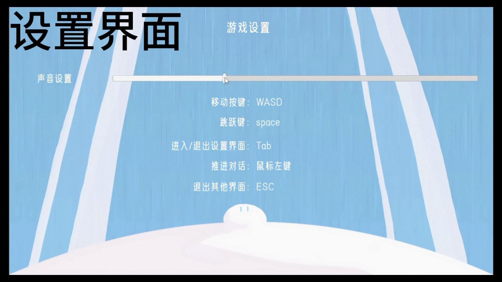

← 返回作品索引
《D.D.T.》设置界面 / 演示视频画面
WASD 移动 · Space 跳跃 · 鼠标左键推进对话 · Tab 设置

01 / OVERVIEW
项目概览
《D.D.T.》以「治愈、休闲、收集」为核心体验定位，围绕世界观、角色、剧情与玩法体系进行整体设计。
玩家在差异化的探索地图中推进解谜与收集，通过主线、支线与隐藏任务的多线交织，逐步解锁剧情分支与多结局。作品需要在 GameJam 的有限周期内，把体验定位、内容结构和可玩流程同时推进到可演示状态。
EXPERIENCE / 01
治愈、休闲、收集
以三种体验关键词统一世界观、角色、剧情与玩法体系，保证内容表达和玩家行为指向同一个核心。
STRUCTURE / 02
三类任务交织
主线、支线与隐藏任务共同承担内容展开，通过不同层级的目标引导玩家探索地图与剧情。
NARRATIVE / 03
分支与多结局
将剧情推进与玩家的探索、收集行为关联，逐步解锁不同剧情分支和多结局走向。
02 / MY ROLE
我的工作 策划
- 01
制定核心策划方案。明确游戏「治愈、休闲、收集」的核心体验，完成世界观、角色、剧情及玩法体系的整体设计。
- 02
细化玩法与内容结构。设计差异化探索地图、解谜机制与收集系统；梳理主线、支线及隐藏任务脉络，规划剧情分支与多结局走向。
- 03
负责平衡性与团队对接。制定数据统计维度，包括角色虚弱度、探索进度等核心数据，对接程序与美术团队，明确开发需求并推动落地。
- 04
持续迭代策划文档。补充 UI、场景互动等细节设计，配合团队完成 Demo 开发过程中的需求优化与问题协调。
03 / DESIGN NOTES
设计重点
这个项目里，我关注的是如何让「治愈」不只停留在视觉氛围，而是进入玩家的行动与反馈：探索有节奏、收集有目标、剧情推进能回应玩家的选择。
MAP
差异化探索地图
不同地图承担不同的解谜与收集节奏，避免同类内容连续堆叠，让探索过程保持变化。
QUEST
多线任务结构
把主线、支线、隐藏任务分层组织，让玩家既能跟随明确目标，也能从探索中获得额外叙事。
DATA
可观测的平衡
围绕角色虚弱度与探索进度建立统计维度，让难度和内容推进有可讨论、可调整的依据。
项目说明：演示画面来自《D.D.T.》实际游戏流程；界面中的操作提示与交互逻辑在策划文档中同步定义。
04 / LINKS
NEXT PROJECT / 02小喵钓钓乐